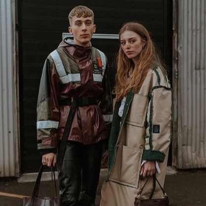

OM MIG
Du kan bruge denne side til at få mere information om mig, mine interesser og min arbejdserfaring.
Bagggrund
Jeg hedder Kamille Svalgaard Nielsen, og jeg er 21 år gammel. Jeg er født og opvokset i Valby i København, men flyttede hjemmefra for ét år siden, og bor nu på Vesterbro med min veninde Emma.
Jeg blev født på Hvidovre Hospital i 1999, tre måneder efter mine forældre købte det hus de stadig bor i. Mine to småsøstre og familiehunden Simba bor stadig i huset i Valby med mine forældre.
Studiestart
Jeg startede i sommers på MMD på KEA, og er virkelig glad for oplevelsen. Jeg lærer en masse nye ting, og føler at jeg gør mig brugbar og klar til arbejdsmarkedet. I mit valg af uddannelse, har det været vigtigt for mig at studere på en uddannelse, hvor jeg i sidste ende har et bredt spektrum af kompetencer, og derved et større valg af arbejdspladser.
Min store interesse
Modeverden er min store passion og interesse. Derfor er mit store ønske at tage min uddannelse med ind i branchen. Jeg har meget arbejdserfaring i modeindustrien, da jeg har brugt mine sabbatår på at dygtiggøre mig, og lære branchen at kende.
Jeg har blandt andet siddet på det danske modemagasin Costume, samt arbejdet i PR & Marketing hos Chanel Scandinavia og Saks Potts. I fremtiden vil jeg gerne fortsat arbejde med PR og Marketing.
Der er et fantastisk redskab i det at klæde sig på. Du skaber din personlighed, dit udtryk og din egen form for æstetik. Dette bruges meget i fx PR og marketing til de forskellige tøjbrands, der gennem deres design og æstetik også skaber udtryk og personlighed, som deres målgruppe kan identificere sig med. Det er et helt unikt space.
Arbejdserfaring
- 2019: Modeassistent på modemagasinet Costume
- 2019: Modetegningskursus på SAFD
- 2019: PR praktikant hos Chanel Scandinavia
- 2020: Freelance stylist- og projektassistent hos PR-bureauet Presskontakterna
- 2020: PR og marketingsassistent hos Saks Potts